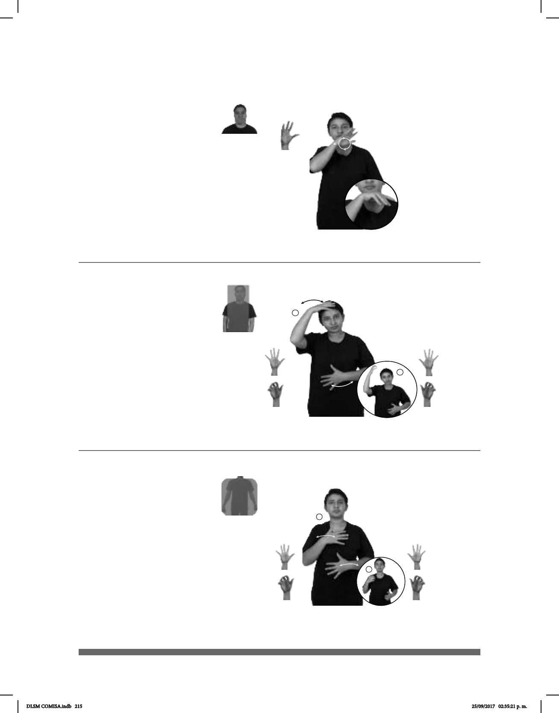

215
Seña: SM
5.2
La palma inicia oblicua
hacia la izquierda y hacia abajo y
termina hacia abajo.
Sobre la barbilla.
La muñeca se mueve
formando círculos.
sust. f. Hortaliza de
bulbo comestible formada por capas
superpuestas de color blanco o morado
que tienen un sabor picante.
Seña: SB
MD y MB seña que pasa de
5.1 a 5.10
MD palma hacia abajo. MB
palma hacia adentro.
MD sobre de la cabeza, del
centro al lado derecho. MB a la altura del
abdomen, del centro al lado izquierdo.
Los dedos de MD y MB se
retraen mientras las manos se mueven
formando arcos repetidamente.
sust. m. Mamífero primate del
suborden de los simios que se caracteriza
por poder oponer los dedos pulgares de las
cuatro extremidades a los otros dedos y usar
su cola para agarrar objetos.
(5-G 67)
____o.i.p.
pro-ELLA LLORAR PORQUE CEBOLLA PICAR
Ella llora porque pica cebolla.
_
Mono
(A) (5-G 68)
ENTRAR ANIMAL NIÑO
izquierda
VER MONO
El niño ve un mono en el zoológico.
1
2
Seña: SB
MD y MB seña que pasa de 5.1
a 5.18
MD y MB palmas hacia adentro.
MD a la altura del pecho del centro
al lado derecho, MB a la altura del abdomen del
centro al lado izquierdo.
La MD se mueve formando arcos
de izquierda a derecha repetidamente mientras los
dedos se retraen, la MB se mueve formando arcos
de derecha a izquierda repetidamente mientras los
dedos se retraen.
sust. m. Mamífero primate del
suborden de los simios, que se caracteriza por
poder oponer los dedos pulgares de las cuatro
extremidades a los otros dedos y usar su cola para
agarrar objetos.
_
Mono (B) (5-G 69)
ENTRAR ANIMAL NIÑO
izquierda
VER MONO
El niño ve un mono en el zoológico.
DLSM COMISA.indb 215 25/09/2017 02:35:21 p. m.